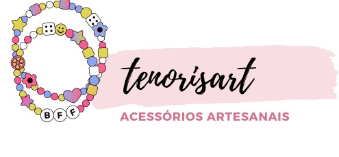

|  |
Quem SomosSomos uma pequena empresa cuja missão é atender e fornecer a seus clientes, produtos com qualidade comprovada e atendimento personalizado. Fornecemos à nossos clientes a satisfação de ter uma empresa que se preocupa em entregar um serviço de excelência e preço justo.s Anos 1990, hippies, praia... Essas são as primeiras coisas que vêm à cabeça quando falamos em colares, pulseiras e brincos feitos com miçangas. Mas a origem das contas coloridas é muito mais antiga do que você imagina. |
|
Desenvolvido por Tenorisart-2022 |